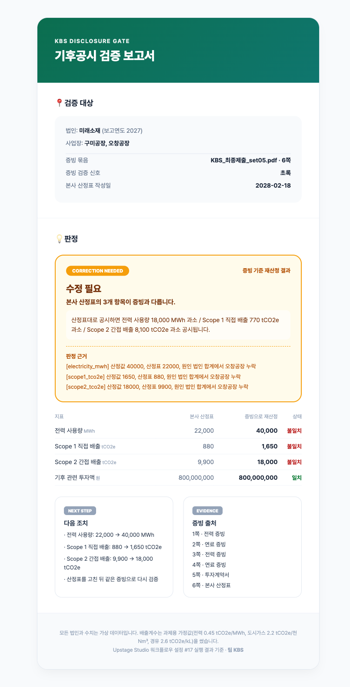
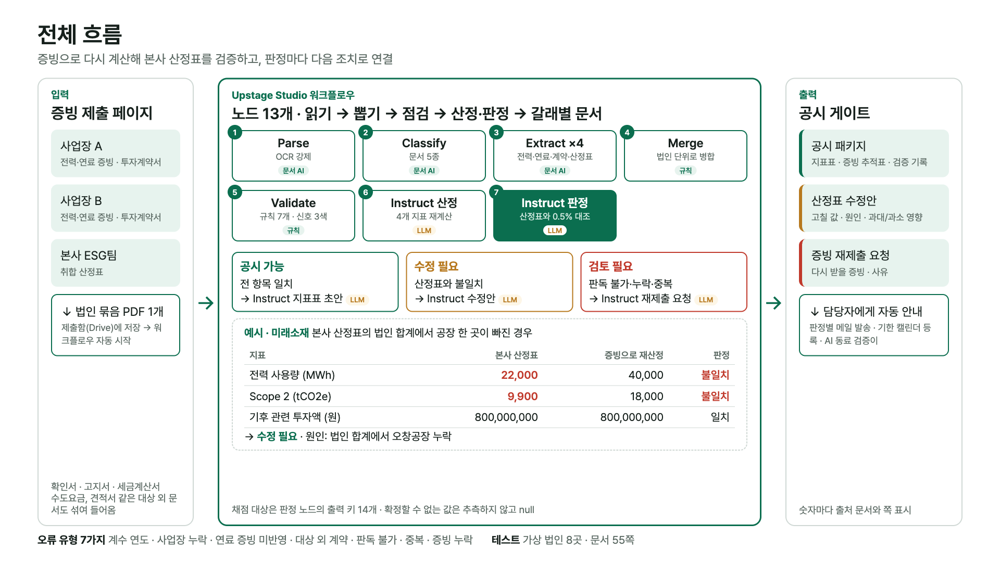
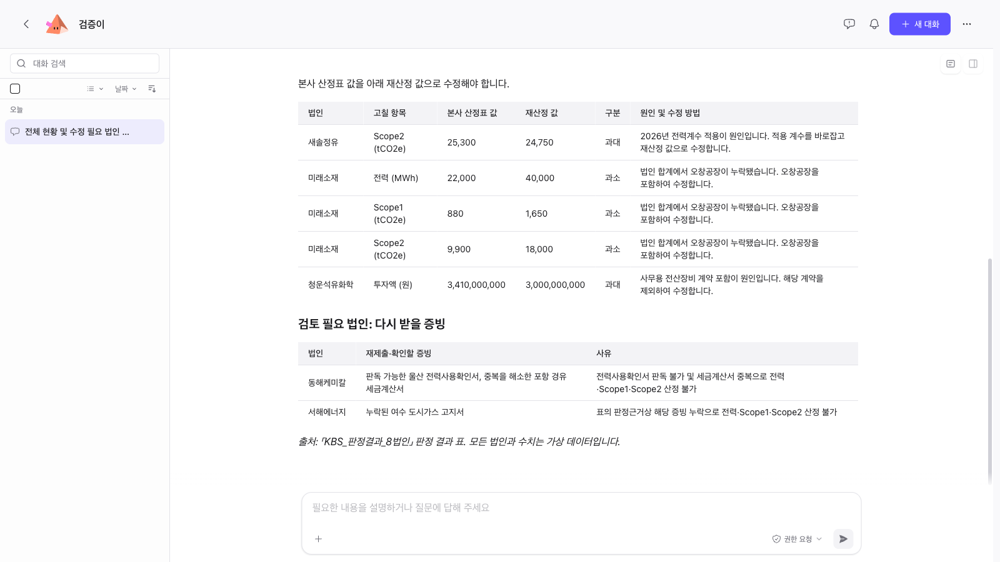

탄소회계·공시 작성 솔루션은 공시 자료를 만듭니다. 그 과정에서도 오류가 생깁니다. KBS는 이미 만들어진 공시 수치를 원본 증빙으로 다시 계산해 완전성과 정확성을 확인합니다. 기존 솔루션을 대체하지 않고 그 위에 붙습니다.
계수 연도, 사업장 누락, 대상 외 계약, 판독 불가, 중복, 증빙 누락을 구분해 냅니다.
공시 숫자마다 어느 문서 몇 쪽에서 나왔는지 남깁니다.
담당자는 수정 필요와 검토 필요로 넘어온 건만 봅니다.
법인 한 곳의 검증이 끝나면 보고서 한 장이 나옵니다. 판정, 산정표와 다른 항목, 공시했을 때의 과대·과소 규모, 다음 조치, 증빙 출처가 담깁니다.

사업장이 보낸 고지서를 본사 담당자가 손으로 옮겨 적은 취합표가 그대로 공시 수치가 됩니다. 옮기는 과정에서 생긴 오류는 취합표만 봐서는 보이지 않습니다.
전년도 계수를 그대로 써서 Scope 2가 550 tCO2e 많게 잡힙니다.
법인 합계 행에 한 사업장이 빠져 전력이 18,000 MWh 적게 잡힙니다.
부가세와 사무용 장비 계약이 더해져 투자액이 4.1억 원 부풀려집니다.
사용량 숫자가 번진 확인서로는 값을 확정할 수 없습니다.
원본과 사본이 함께 제출되면 연료가 두 배로 합산됩니다.
한 사업장의 가스 고지서가 통째로 빠져 있습니다.
산정표의 숫자는 계산에 쓰지 않습니다. 증빙에서 뽑은 값으로만 산정한 뒤 비교하기 때문에, 틀린 곳과 틀린 이유를 함께 짚습니다.
PDF를 한 장씩 나눠 전력, 연료, 계약서, 산정표, 대상 외 문서로 분류합니다.
Parse · Classify사업장, 사용량, 단위, 문서번호, 금액, 판독 가능 여부를 추출합니다.
Extract ×4판독 불가, 증빙 누락, 대상 외 계약을 규칙 7개로 검사해 신호를 냅니다.
Merge · Validate네 지표를 다시 계산하고 산정표와 0.5% 기준으로 대조합니다.
Instruct ×2KSSB 2호 지표표와 검토 의견을 작성합니다.
Instruct
확정할 수 없는 값은 추측하지 않고 비워서 사람에게 넘깁니다.
네 지표가 모두 산정표와 일치합니다.
산정은 됐지만 산정표와 다릅니다.
증빙이 흐리거나 빠졌거나 중복입니다.
법인마다 사업장 2곳의 2027년 증빙을 넣었습니다. 일부러 심어 둔 오류 유형 7가지를 모두 가려냈습니다.
법인
쪽의 증빙 문서
가지 오류 유형
개 출력 키로 판정
| 법인 | 넣어 둔 상황 | 판정 | 워크플로우가 짚은 원인 |
|---|---|---|---|
| 한빛에너지 | 정상, 수도요금 고지서 혼입 | 공시 가능 | 전 항목 일치 |
| 남해화학 | 대상 외 계약이 섞였지만 본사가 제외함 | 공시 가능 | 전 항목 일치 |
| 대양화학 | 산정표가 경유 세금계산서 한 장을 빠뜨림 | 수정 필요 | Scope 1 1,580 대 1,424 |
| 새솔정유 | 산정표가 전년도 전력 계수 사용 | 수정 필요 | Scope 2 24,750 대 25,300 |
| 미래소재 | 법인 합계에서 사업장 누락 | 수정 필요 | 합계에서 오창공장 누락 |
| 청운석유화학 | 투자액에 대상 외 계약 포함 | 수정 필요 | 투자액 30억 대 34.1억 |
| 동해케미칼 | 흐린 스캔, 중복 세금계산서 | 검토 필요 | 울산 전력 판독 불가, 포항 경유 중복 |
| 서해에너지 | 사업장 연료 증빙 누락 | 검토 필요 | 여수 도시가스 고지서 누락 |
증빙이 들어오는 곳과 결과가 나가는 곳을 담당자가 이미 쓰는 메일, 드라이브, 엑셀, 캘린더에 맞췄습니다.
사업장이 증빙을 보내면 Upstage Studio의 트리거가 워크플로우를 자동으로 실행하도록 연결할 수 있습니다.
설정 버전을 고정한 Studio API로 호출해 같은 기준으로 반복 실행합니다.
재제출 요청 메일, 기한 일정, 산정표 수정안, 공시 패키지로 이어집니다.
데모의 메일·캘린더 버튼은 로그인된 계정의 작성 화면을 내용이 채워진 채로 엽니다. 트리거와 API 연결은 Studio가 제공하는 기능이며 이 데모에는 설정하지 않았습니다.

판정 결과가 쌓인 컬렉션을 Upstage Studio의 AI 동료에 연결했습니다. "수정 필요 법인은 무엇을 고쳐야 하나"를 물으면 표에 있는 값만으로 정리해 줍니다. 숫자를 새로 계산하지 않습니다.
2026 Energy AI Workflow Hackathon 참가 팀입니다. 이름은 KSSB에서 따왔습니다. 증빙 문서 제작, 워크플로우 설계, 정답지 검수, 발표를 나눠 맡았습니다.
이승현 Seunghyun Lee · 여한호 Hanho Yeo · 고상아 Sanga Ko · 이동민 Dongmin Lee · 정은세 Eunse Jung
증빙 양식 9종과 가상 법인 8곳의 문서 묶음을 만들었습니다.
분류·추출·검증·산정·판정 노드와 프롬프트를 설계했습니다.
정답지와 유형표를 대조하고 설계서와 발표 자료를 만들었습니다.